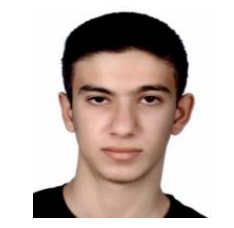

Hi, I'm Cumali, a junior majoring in Computer Engineering at the Istabul Technical University. I was born in Adana in 2005. We moved to Diyarbakır in 2012. I graduated from Vali Aydın Arslan High School in 2023. I came to Istanbul to study Computer Engineering because computers fascinates me. I like watching movies. My favorite movie is Inception. I am currently interested in Data Science, Artificial Intelligence and Software Development. Throughout my years in university I want to study on those areas, join labs and work on projects to narrow down the fields into one that best suits for me.
